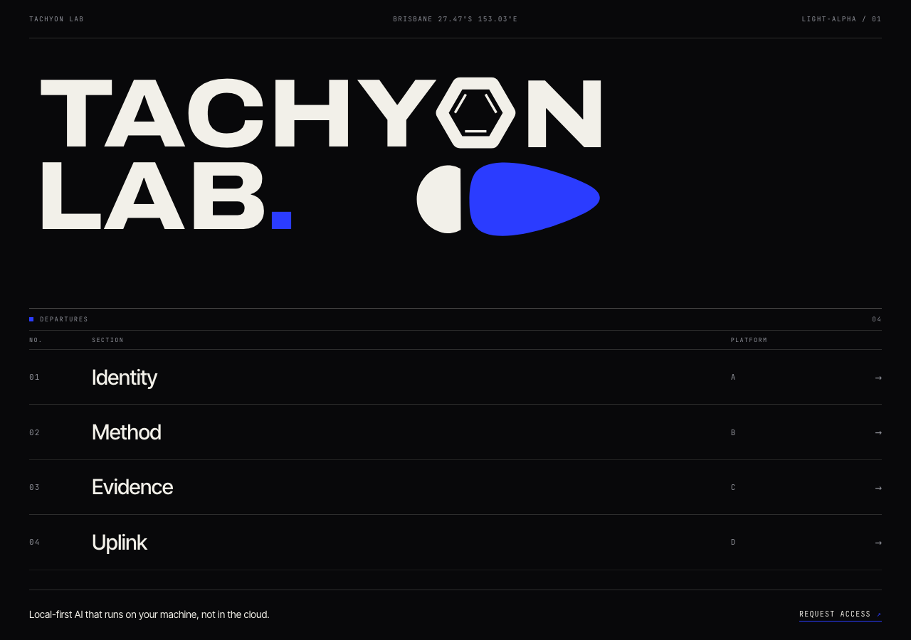
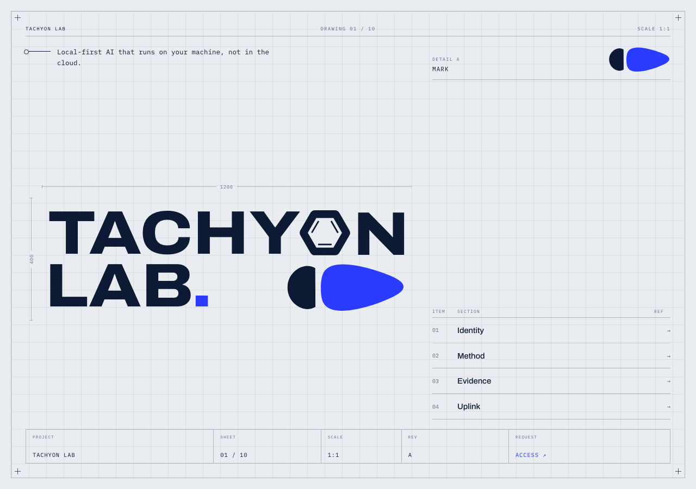
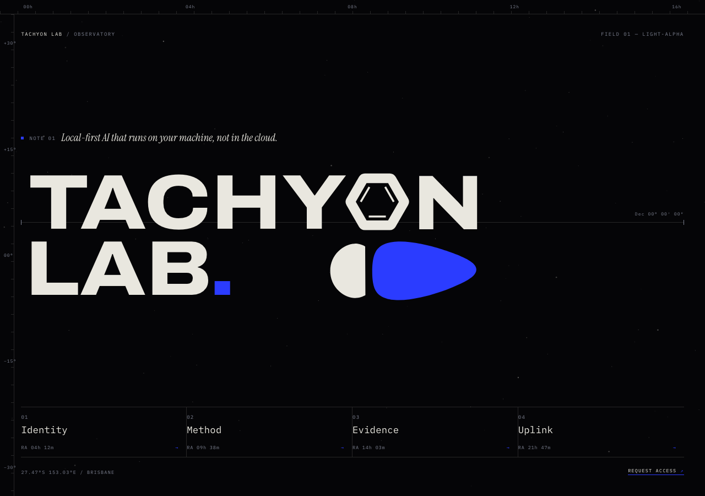
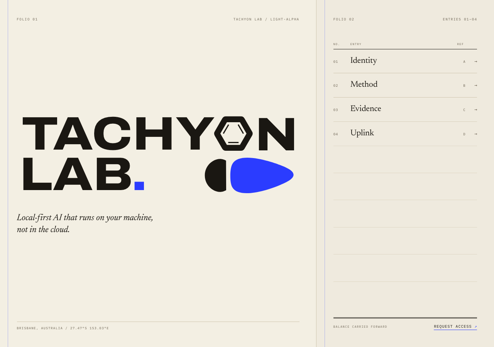
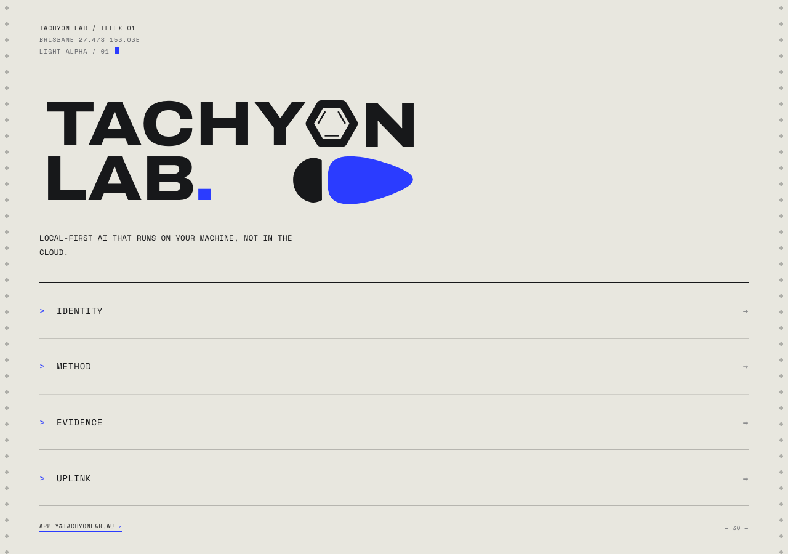
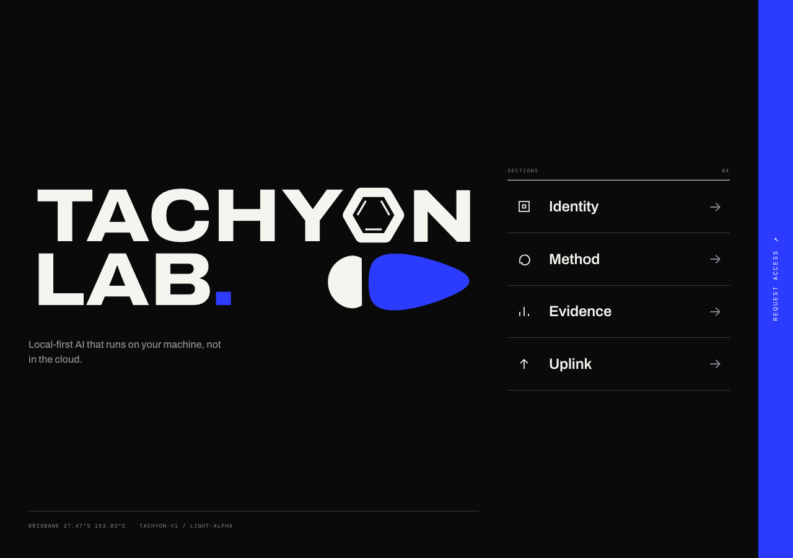
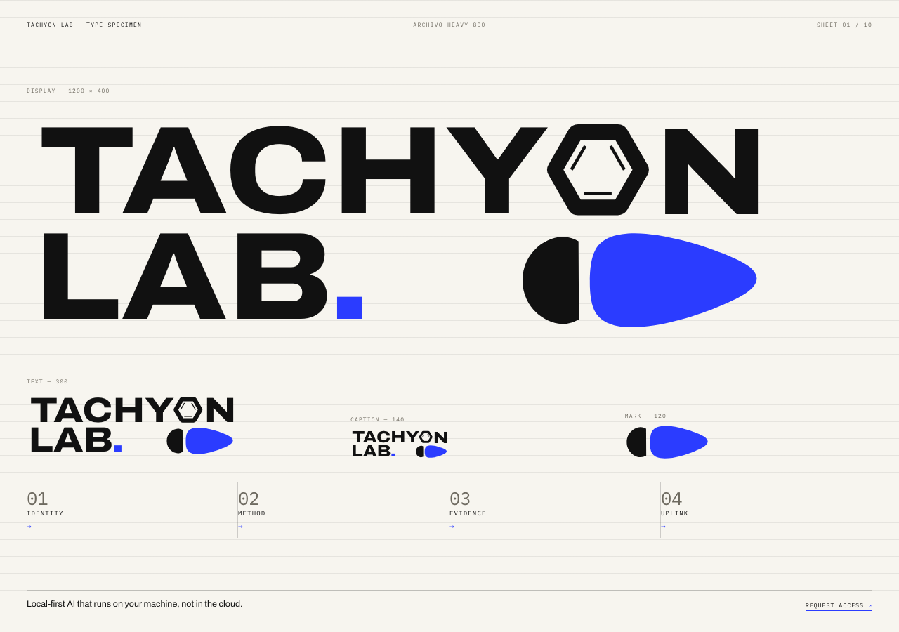
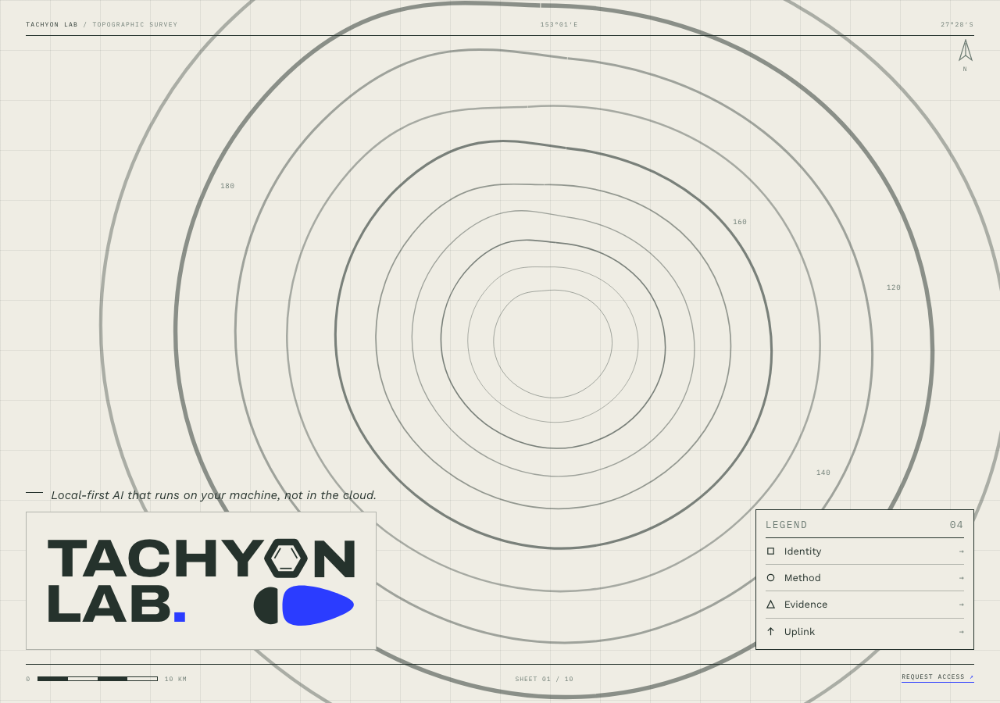
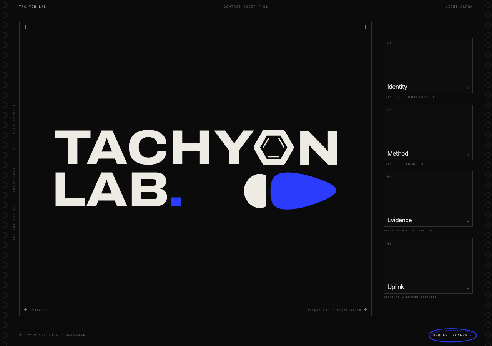
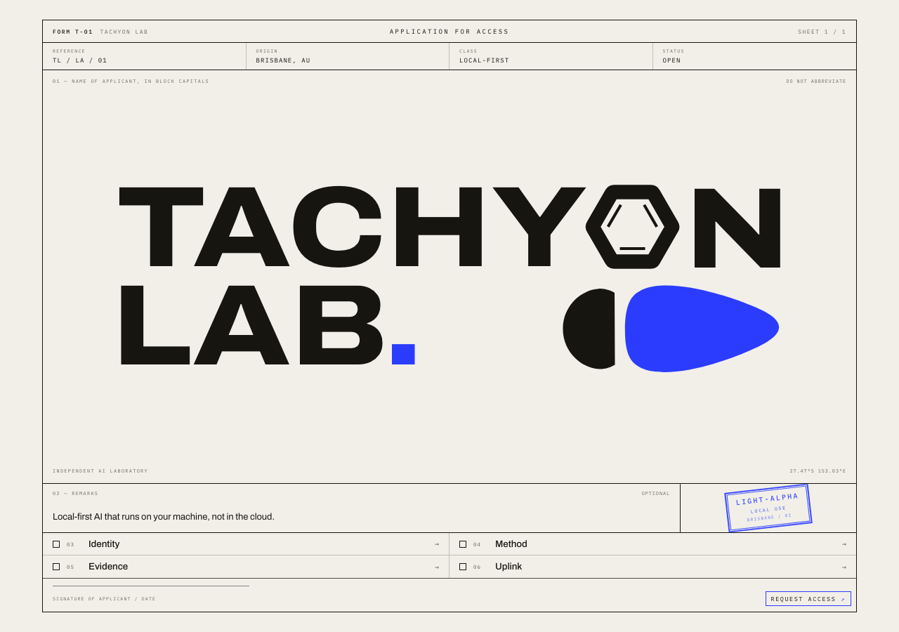

Ten separate design languages, not ten layouts of one. Each page is a single entry viewport — wordmark, one line, four destinations, access. Pick one direction and it gets built out into the full site.

01Fahrplan→ Departure board / rows as timetable / dark
02Drafting→ Drawing sheet / dimensions and title block / light
03Ephemeris→ Star catalogue / rulers and coordinates / dark
04Ledger→ Two-page accounting spread / ruled entries / cream
05Telex→ Teleprinter tape / sprockets and typing / pale
06Wayfinding→ Signage system / pictograms and blue band / dark
07Specimen→ Type specimen / the wordmark as the subject / off-white
08Contour→ Topographic survey / drawn contours and legend / warm paper
09Contact→ Contact sheet / frames, sprockets, grease pencil / dark
10Form→ Application form / checkboxes and rubber stamp / paper